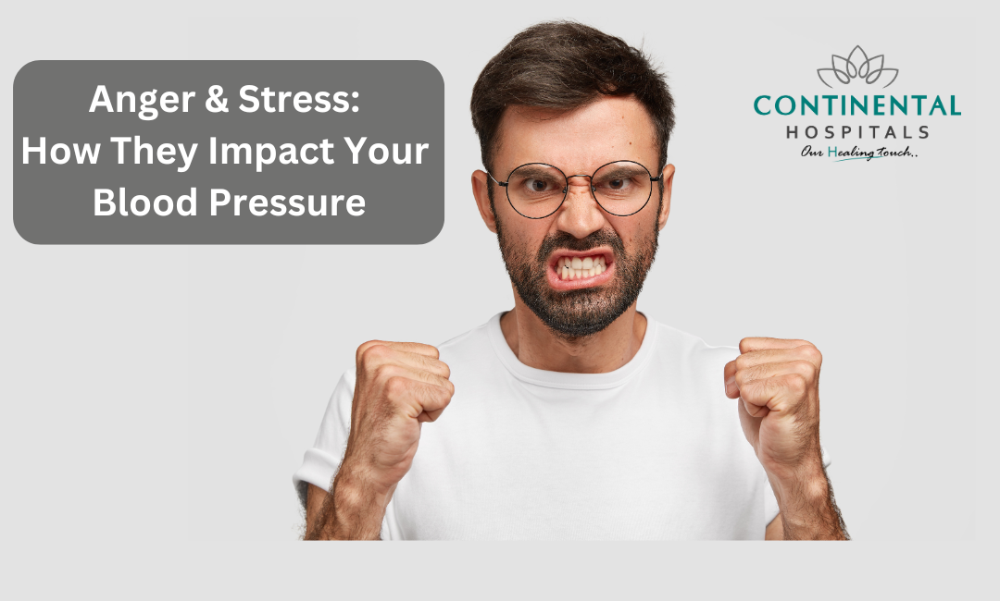

To control anger, identify triggers, recognize warning signs, and use strategies like deep breathing, taking a break, or engaging in a relaxing activity. Long-term management involves practicing relaxation techniques, building a support system, and seeking professional help if needed.
